多背景
渐变
盒子模型介绍（重点）
边框
内边距
盒子大小计算
padding值的使用
外边距
边框圆角
盒子阴影
- 多背景
- background:url（）no-repeat 30px 5opx,background:url（）no-repeat 30px 5opx,
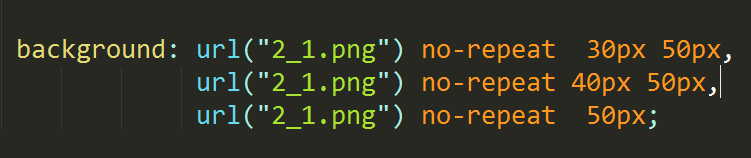
- 总结：
- 在多背景写法中，一般需要将设置的背景颜色单独放到多背景写法后面
-
渐变：
- 线性渐变
- 组成：
- 语法：
- height: 100px;
background-image: linear-gradient(
to right,
blue,
red}
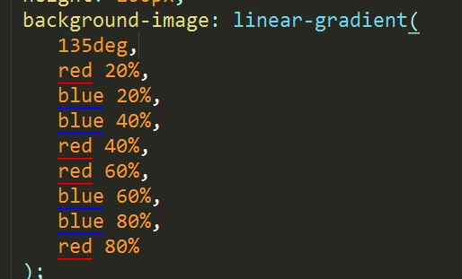
-
通过角度可以表示方向：
odeg:从下向上渐变
90deg:从左向右渐变
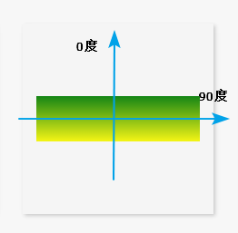
-
总结：
-
默认如果不设置backgrung-size，那么百分比是相对父元素的宽度
-
如果设置了backgrung-size，百分比是相对于当前backgrung-size的值
-
径向渐变：
-
组成：
-
圆心位置
-
半径(范围)
-
开始颜色
-
结束颜色
语法：
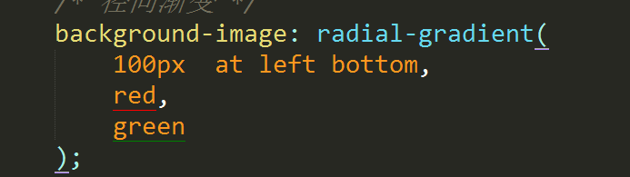
backgrung-image:radial-gradient
（100px at left buttom,
red,
green);
-
总结：
设置圆心位置可以使用关键字（center|top|right|bottom)
通过位置具体值可以设置圆心位置
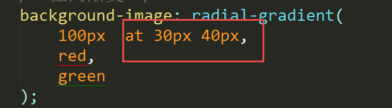
如果要实现一个正圆形，则半径设置一个值或设置两个相同的值，反之就为一个小椭圆
-
行高：行高单位及常见应用
-
默认情况下：文字大小为16px
-
默认情况下：行高大小为18px
-
行高=文字大小+上间距+下间距 行高=文字两条基线之间的距离
-
总结：
-
行高就是改变文字的上下间距
-
实现文字在容器中垂直居中，（行高=容器的高度）
-
文字大小可以影响行高值
-
文字字体可以影响行高值
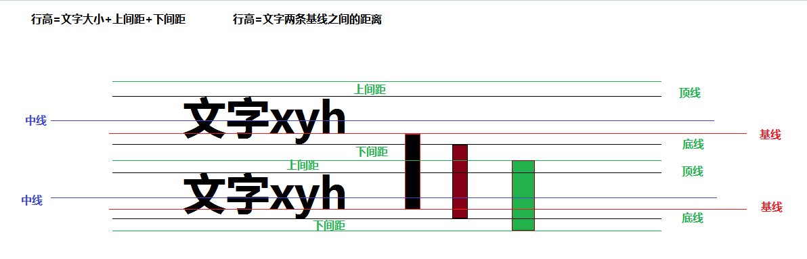
-
行高单位：px，em,%,不带单位
给子元素设置行高
-
px：最终文字的行高就是我们设置的行高
-
em：最终文字的行高=文字大小X行高值
-
%:最终文字的行高=文字大小X行高值
-
不带单位：最终的文字行高=文字大小X行高值
-
如果 给父元素设置行高，子元素的行高特点：
- 父元素行高单位是px：子元素的行高=父元素的行高(继承）
-
em:子元素的行高=父元素的文字大小*行高值（先计算后继承）
-
%:子元素的行高=父元素的文字大小*行高值（先计算后继承）
-
不带单位：子元素的行高=子元素的文字大小*行高值（先继承后计算）
-
总结：如果没有设置行高，文字大小或字体影响行高值
-
盒子模型介绍（重点）
-
作用：
网页布局（在网页中画盒子）
-
盒子的组成：
-
margin：盒子与盒子这间的距离（外边距）
-
border（边框）
-
padding:内容与盒子边框之间的距离（内边距）
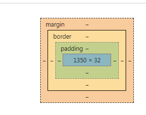
-
边框（border）
-
border
-
border-width 边框宽度
-
border-color 边框颜色
-
border-style 设置边框样式
-
none:没有边框
-
dotted:点线
-
dashed:虚线
-
solid:实线
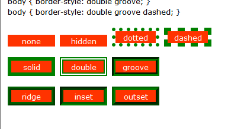
-
联写：
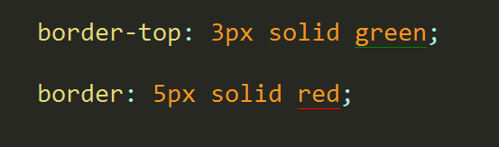
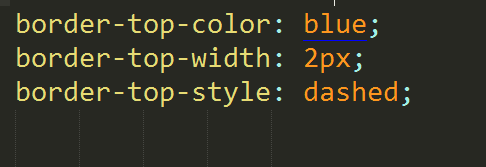
-
去掉边框：border：0 或者border:none;
-
去掉轮廓线：outline-style:none;
-
点击文字输入框获取焦点：
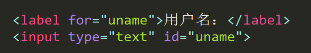
-
表格中的边框合并
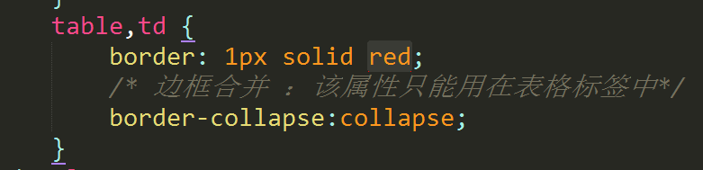
-
内边距（padding)
-
盒子中的内容与边框之间的距离
-
总结：
-
通过内边距可以移动盒子中的内容的位置
-
内边距可以改变盒子大小
-
边框可以改变盒子大小
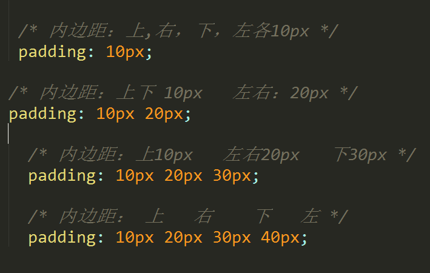
-
盒子大小计算
-
width和height 盒子中的内容区域的大小
-
border和padding 影响盒子大小
-
盒子实际大小=内容+边框+内边距
-
padding值得特使用法
-
总结：
在子元素中，如果子元素没有设置宽度，那么给该子元素设置padding值，在父元素的宽度范围内，子元素的大小没有变化。
-
外边距（margin)
-
盒子与盒子之间的距离
-
总结：
-
外边距不会改变盒子大小
-
外边距移动盒子位置
-
margin属性联写的方式与padding一样
盒子水平居中：margin:0 auto;
-
外边距的特点：
-
垂直外边距塌陷
-
给父元素设置边框
-
给父元素设置overflow:hidden;
因为：overflow:hidden;可以出发元素的bfc
bfc：元素的格式化上下文
-
垂直外边距合并
在垂直方向设置外边距，外边距会以最大值为准，不会叠加。
-
边框圆角
-
border-redius:;
-
注意：
如果设置一组参数，那么代表的是垂直半径和水平半径一样，如果要设置垂直半径，设置/+值
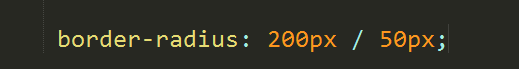
如果水平半径和垂直半径一样，设置一个值就可以了。
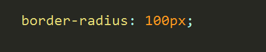
-
盒子阴影
-
box-shadow:;
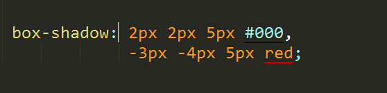
默认设置的外阴影，设置内阴影加inset
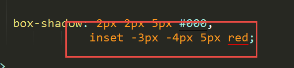